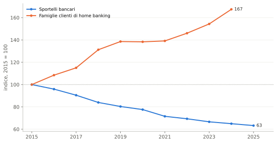
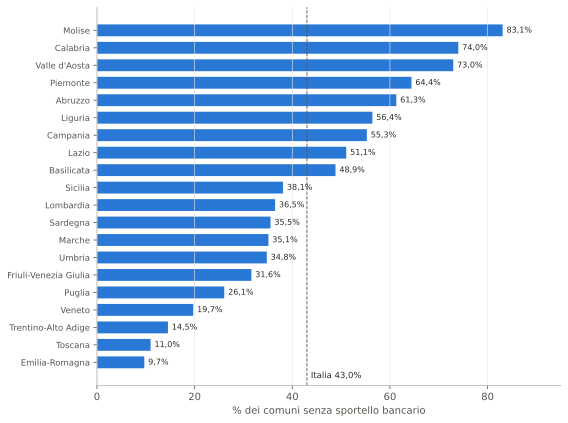
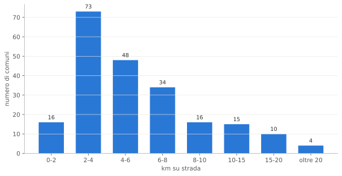
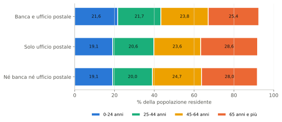
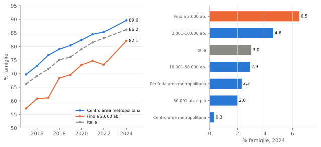

Servono ancora gli sportelli fisici?
Desertificazione finanziaria, presidio postale e home banking in Italia. Versione 2, corretta
Paolo Volterra ![]()
Italiano. Fra il 2015 e il 2025 la rete degli sportelli bancari in Italia è scesa da 30.258 a 19.138 unità, oltre un terzo in meno, mentre i clienti di home banking fra le famiglie sono cresciuti del 67% fino al 2024. Su 7.899 comuni, 3.181 hanno un ufficio postale ma nessuno sportello bancario e 216 non hanno né l’uno né l’altro: in tutto il 43% dei comuni non ha una banca. Nei 216 comuni senza servizi la metà dei residenti ha il servizio più vicino entro 4,6 km di strada; per 4 comuni la distanza supera i 20 km. Il comune medio rimasto con il solo ufficio postale è più anziano e ha un reddito per contribuente più basso dell’11% rispetto ai comuni con entrambi i servizi; pesando per la popolazione la differenza di età si riduce a poco più di un punto. Nei comuni fino a 2.000 abitanti il 6,5% delle famiglie dichiara che la banda larga non è disponibile nella zona. La risposta alla domanda del titolo dipende da chi: lo sportello è quasi superfluo per la clientela digitale e difficile da sostituire per anziani e aree interne. Questa versione corregge alcuni dati della versione del 31 marzo 2026, elencati in fondo.
English. Between 2015 and 2025 the number of bank branches in Italy fell from 30,258 to 19,138, more than a third, while household home-banking customers grew by 67% up to 2024. Of 7,899 municipalities, 3,181 have a post office but no bank branch and 216 have neither: overall 43% of municipalities have no bank. In the 216 municipalities without services, half of them have the nearest service within 4.6 km by road; for 4 the distance exceeds 20 km. The average municipality left with only a post office is older and has an income per taxpayer 11% lower than municipalities with both services; weighting by population, the age gap shrinks to just over one point. In municipalities of up to 2,000 inhabitants, 6.5% of households report that broadband is not available in their area. The answer to the question in the title depends on who is asking: branches are almost superfluous for digital customers and hard to replace for the elderly and inner areas. This version corrects some figures of the 31 March 2026 version, listed at the end.
desertificazione finanziaria, sportelli bancari, Poste Italiane, home banking, inclusione finanziaria, aree interne
1 Il punto di partenza: un terzo degli sportelli in meno
Nel 2015 in Italia c’erano 30.258 sportelli bancari; nel 2024 erano 19.655, cioè 10.603 in meno, e nel 2025 19.138, il 36,8% in meno rispetto al 2015 [1]. La riduzione riflette tre spinte che hanno agito insieme: la pressione sui costi operativi delle banche, la crescita dei canali digitali che ha ridotto il traffico in filiale e le fusioni, che hanno eliminato le sovrapposizioni fra reti. Nello stesso periodo le famiglie clienti di servizi di home banking sono passate da 25,6 milioni nel 2015 a 42,9 milioni nel 2024, il 67% in più [2].

Figura 1: Sportelli bancari e famiglie clienti di home banking in Italia, indice 2015 = 100, 2015–2025 (home banking fino al 2024). Fonte: elaborazione su dati Banca d’Italia [1], [2].
In parole semplici: dal 2015 gli sportelli calano quasi ogni anno, mentre le famiglie che usano la banca online crescono; le due linee si allontanano senza interruzioni.
Il grafico non dice chi è rimasto indietro. L’uso dei canali digitali non è uniforme per età, territorio e tipo di operazione, e per capirlo bisogna scendere al livello del singolo comune.
2 La mappa della desertificazione
2.1 Quattro gruppi di comuni
Incrociando gli sportelli bancari per comune rilevati dalla Banca d’Italia al 31 dicembre 2024 [3] con i 12.615 uffici postali di Poste Italiane censiti a marzo 2026 e assegnati ai comuni in base alle coordinate [4], ogni comune italiano rientra in uno dei quattro gruppi della tabella. I comuni considerati sono i 7.899 dei confini amministrativi ISTAT 2024-2025; gli sportelli attribuiti a questi comuni sono 19.587.
| Gruppo | Comuni | % dei comuni |
|---|---|---|
| Banca e ufficio postale | 4.480 | 56,7 |
| Solo ufficio postale | 3.181 | 40,3 |
| Né banca né ufficio postale | 216 | 2,7 |
| Solo banca | 22 | 0,3 |
Tabella 1: Comuni italiani per presenza di sportelli bancari e uffici postali. Fonte: elaborazione su dati Banca d’Italia e Poste Italiane [3], [4].
In parole semplici: più di metà dei comuni ha sia una banca sia un ufficio postale; quattro comuni su dieci hanno solo la posta, e un piccolo gruppo non ha né l’una né l’altra.
3.181 comuni, il 40,3%, hanno come unico presidio fisico un ufficio postale. In altri 216 comuni non c’è né una banca né un ufficio postale. In tutto 3.397 comuni, il 43,0%, sono senza sportello bancario. Solo 22 comuni hanno una banca e nessun ufficio postale: quando la banca chiude, il presidio che resta è quasi sempre la posta.
2.2 Distribuzione per regione

Figura 2: Comuni senza sportello bancario per regione, percentuale dei comuni della regione (solo ufficio postale oppure nessun servizio). Fonte: elaborazione su dati Banca d’Italia e Poste Italiane [3], [4].
In parole semplici: in Molise, Calabria e Valle d’Aosta più di sette comuni su dieci non hanno una banca; la linea tratteggiata è la media italiana.
Le quote più alte di comuni senza banca sono in Molise (83,1%), Calabria (74,0%), Valle d’Aosta (73,0%), Piemonte (64,4%) e Abruzzo (61,3%). In numero di comuni il primo è il Piemonte, con 760, davanti a Lombardia (548) e Campania (304). Il fenomeno riguarda quindi sia il Mezzogiorno sia le regioni del Nord con molti piccoli comuni di montagna e di collina: è legato soprattutto alla bassa densità di popolazione.
3 I 216 comuni senza banca né ufficio postale
3.1 Le distanze dal servizio più vicino
Nei 216 comuni senza alcun presidio, qualsiasi operazione, che sia un prelievo, un pagamento o una raccomandata, richiede di spostarsi in un altro comune. La distanza è misurata su strada, dal comune al servizio più vicino.

Figura 3: Comuni senza banca né ufficio postale per distanza stradale dal servizio più vicino (banca o ufficio postale), numero di comuni. Fonte: elaborazione su dati Banca d’Italia e Poste Italiane [3], [4]; distanze calcolate dall’autore.
In parole semplici: per la maggior parte di questi comuni il servizio più vicino è a meno di 8 km; per pochi comuni bisogna fare più di 20 km.
| Servizio | Mediana | Media | Massimo | Comuni oltre 20 km |
|---|---|---|---|---|
| Ufficio postale più vicino | 5,0 | 7,1 | 102,1 | 8 |
| Sportello bancario più vicino | 7,1 | 10,3 | 80,5 | 16 |
| Servizio più vicino, banca o posta | 4,6 | 6,2 | 43,2 | 4 |
Tabella 2: Distanze stradali dei comuni senza banca né ufficio postale (km). Fonte: elaborazione su dati Banca d’Italia e Poste Italiane [3], [4].
In parole semplici: la riga in basso dice quanto deve fare chi vive in questi comuni per raggiungere il servizio più vicino, qualunque sia; le righe sopra guardano a banca e posta separatamente.
La metà di questi comuni ha il servizio più vicino entro 4,6 km; per 4 comuni la distanza supera i 20 km, fino a 43,2 km. Prese separatamente, la posta più vicina è a 5,0 km in mediana e la banca a 7,1 km. In montagna, d’inverno o senza mezzi pubblici, anche distanze contenute diventano un ostacolo per chi non guida, e i residenti anziani sono spesso in questa condizione. Il caso più lontano è Carcoforo, in provincia di Vercelli: 43,2 km di strada fino alla banca più vicina e 102,1 km fino all’ufficio postale.
3.2 Il valore economico
Il volume di depositi e impieghi che fa capo ai residenti di questi comuni non è osservabile direttamente, perché le statistiche bancarie per comune sono riferite al luogo in cui si trova lo sportello. Il tentativo di approssimarlo con i volumi dei comuni vicini non ha dato un risultato utilizzabile e non è riportato. Il costo della desertificazione per queste persone resta quindi soprattutto un costo di accesso, in tempo, trasporto e a volte rinuncia, che le statistiche bancarie non misurano.
4 La risposta: dipende da chi
4.1 Tre gruppi di clienti, tre risposte
La domanda «servono gli sportelli fisici?» non ha una risposta unica: dipende dal tipo di cliente e dal tipo di operazione.
| Gruppo | Operazioni tipiche | Ruolo dello sportello fisico |
|---|---|---|
| Clientela digitalizzata | Pagamenti, bonifici, saldo, estratto conto | Quasi superfluo; resta per operazioni rare come un mutuo o un reclamo. |
| Piccole imprese e professionisti | Tesoreria ordinaria, servizi online per le imprese, pagamenti | Poco usato in condizioni normali; importante nelle fasi difficili, come il rinnovo di un fido o la ristrutturazione di un debito. |
| Anziani, aree interne, persone fragili | Prelievo, bollette, bonifico, apertura di un rapporto | Difficile da sostituire; il digitale spesso non è usato o non è accessibile; l’ufficio postale è il presidio minimo. |
Tabella 3: Ruolo dello sportello fisico per gruppo di clienti e tipo di operazione. Fonte: elaborazione dell’autore.
In parole semplici: per chi usa le app la filiale conta poco; per le imprese conta quando servono decisioni sul credito; per gli anziani e per chi vive lontano dai centri resta il canale principale.
4.2 Chi vive nei comuni senza banca
| Gruppo | Over-65, media fra comuni (%) | Over-65, pesata (%) | Reddito, media fra comuni (euro) | Reddito, pesato (euro) |
|---|---|---|---|---|
| Banca e ufficio postale | 25,4 | 24,2 | 21.190 | 23.034 |
| Solo ufficio postale | 28,6 | 25,5 | 18.915 | 19.276 |
| Né banca né ufficio postale | 28,0 | 24,1 | 21.233 | 22.523 |
Tabella 4: Quota di residenti con 65 anni e più e reddito imponibile IRPEF per contribuente, per gruppo di comuni, 2023: media semplice fra comuni e valore pesato per la popolazione. Fonte: elaborazione su dati ISTAT [5], [6], Banca d’Italia e Poste Italiane.
In parole semplici: la «media fra comuni» descrive il comune tipico di ciascun gruppo; il valore «pesato» descrive la persona tipica che ci abita, e conta di più i comuni grandi.
Nel comune medio rimasto con il solo ufficio postale il 28,6% dei residenti ha 65 anni o più, contro il 25,4% del comune medio servito da banca e posta e il 28,0% del comune medio senza servizi. Contando le persone invece dei comuni, le differenze si riducono: 25,5% contro 24,2%, e nei comuni senza servizi 24,1%, un valore vicino alla media italiana del 24,3%. I comuni senza banca sono quindi più spesso piccoli comuni anziani, ma la popolazione complessiva che ci vive non è molto più anziana di quella del resto del Paese.
Il reddito segue la stessa direzione per i comuni con il solo ufficio postale: 18.915 euro per contribuente nel comune medio, 2.275 euro in meno (-11%) rispetto ai comuni con entrambi i servizi; pesando per i contribuenti lo scarto sale a 3.758 euro. Per i comuni senza servizi il reddito medio è invece simile a quello dei comuni serviti.

Figura 4: Composizione per età della popolazione residente nel comune medio di ciascun gruppo, 2023, percentuale. Fonte: elaborazione su dati ISTAT [5], Banca d’Italia e Poste Italiane.
In parole semplici: nei comuni con solo la posta o senza servizi la fascia arancione degli anziani è più larga e quella blu dei giovani più stretta rispetto ai comuni con banca e posta.
5 Il paradosso del pagamento senza contante
Il Rapporto 2026 della Community Cashless Society stima che in Italia il valore delle transazioni senza contante abbia raggiunto quasi 459 miliardi di euro nel 2024, il 42,7% dei consumi delle famiglie [7].1 Nonostante questo, l’Italia resta fra i Paesi con l’uso più intenso del contante, con un rapporto fra contante e PIL dell’11,5%, ed è al 21° posto nell’Unione europea nell’indice che misura l’avanzamento dei pagamenti senza contante, una posizione più in basso dell’anno precedente [8].2 Un cittadino su quattro dichiara di aver avuto un rifiuto del pagamento elettronico da parte di un esercente [8].3
I dati di questo documento aiutano a leggere il ritardo. Il 43% dei comuni italiani non ha più uno sportello bancario, e nel comune medio di questo gruppo la popolazione è più anziana e ha un reddito più basso. In questi territori la spinta verso i pagamenti digitali trova meno persone pronte a raccoglierla, e la filiale, che in passato accompagnava anche i clienti meno autonomi nell’uso dei nuovi strumenti, non c’è più. Il rischio è una transizione a due velocità, rapida nelle aree urbane e lenta nelle aree interne.
6 Connettività digitale e piccoli comuni
Se l’alternativa proposta alla filiale è la banca online, serve una connessione adeguata. L’indagine ISTAT sulle famiglie misura l’accesso a internet per tipo di comune [9].

Figura 5: Famiglie con accesso a internet da casa (a sinistra, 2015–2024) e famiglie che dichiarano la banda larga non disponibile nella zona (a destra, 2024), per tipo di comune, percentuale. Fonte: elaborazione su dati ISTAT [9].
In parole semplici: nei comuni più piccoli meno famiglie hanno internet a casa rispetto alle grandi città, e una famiglia su quindici dice che lì la banda larga proprio non arriva.
Nel 2024 le famiglie con accesso a internet da casa sono 82,1 su cento nei comuni fino a 2.000 abitanti e 89,6 su cento nei centri delle aree metropolitane. Il 6,5% delle famiglie dei piccoli comuni dichiara che la banda larga non è disponibile nella zona, più del doppio della media italiana (3,0%) e molte volte il dato dei centri metropolitani (0,3%). Nei piccoli comuni si sommano quindi tre ostacoli: l’assenza dello sportello, una popolazione più spesso anziana e una connessione meno disponibile.
7 Conclusioni
Per la banca e per la clientela digitale lo sportello è quasi superfluo. Le banche riducono la rete senza perdere i clienti più attivi, che usano già i canali online.
Per le piccole imprese lo sportello conta nelle fasi difficili. I servizi online funzionano nella gestione ordinaria; rinnovi di fido, ristrutturazioni del debito e nuove linee di credito richiedono ancora un rapporto diretto con chi conosce l’impresa.
Per anziani e aree interne lo sportello resta difficile da sostituire. La sua chiusura non porta automaticamente all’uso del digitale; l’ufficio postale attenua il problema, ma 216 comuni non hanno né l’una né l’altra cosa.
Il costo dell’accesso fisico ai servizi, che prima era sostenuto dalla banca con la rete di filiali, si sposta sul cliente. Per chi usa i canali digitali questo costo è nullo; per gli altri è un costo in tempo, mobilità e autonomia che le statistiche di settore non registrano.
Correzioni rispetto alla versione del 31 marzo 2026
Questa versione sostituisce quella del 31 marzo 2026. Le conclusioni non cambiano; cambiano i dati seguenti.
- Distanze dei comuni senza servizi. Le statistiche erano calcolate su 238 comuni, cioè i 216 senza banca né ufficio postale più 22 comuni con la sola banca. Ora sono calcolate sui soli 216: la mediana della distanza dall’ufficio postale è 5,0 km (prima 5,2) e dalla banca 7,1 km (prima 6,9); i comuni oltre 20 km sono 8 per la posta (prima 11) e 16 per la banca (prima 17). È stata aggiunta la distanza dal servizio più vicino, banca o posta.
- Esempio di Lampedusa e Linosa. Era presentato come comune senza servizi, ma ha uno sportello bancario; è stato tolto.
- Regioni. Il testo indicava Valle d’Aosta, Molise e Basilicata fra le regioni con più comuni senza banca; i dati indicano Molise, Calabria, Valle d’Aosta, Piemonte e Abruzzo.
- Fonte e numero degli sportelli. La classificazione usa gli sportelli per comune della Banca d’Italia al 31 dicembre 2024 (19.587 sportelli attribuiti ai comuni attuali), non l’estrazione dell’albo di marzo 2026 (19.291 sportelli) citata nella prima versione.
- Comuni senza banca. Sono 3.397, il 43,0%; la prima versione indicava «oltre 3.400, quasi il 44%».
- Home banking. Le famiglie clienti sono cresciute del 67% fra il 2015 e il 2024, non «di un fattore tre o più».
- Età e reddito. I valori pubblicati erano medie semplici fra comuni; ora sono indicate come tali e affiancate dai valori pesati per la popolazione, che riducono di molto la differenza di età.
- Valore economico. Il grafico sui volumi di depositi e impieghi dei comuni vicini è stato tolto perché i dati non erano utilizzabili.
- Dati sulla banda larga. Ora sono letti direttamente dalla banca dati ISTAT; i valori coincidono con quelli della prima versione.
- Pagamenti senza contante. Sono state tolte tre cifre che non risultano nel Rapporto citato (preferenze per età, rifiuto del POS al Sud, quota delle spese ricorrenti per area).
Riferimenti
Nota metodologica
Questo documento nasce dall’interazione di tre componenti. L’autore definisce le domande, esercita il giudizio critico e assume la responsabilità scientifica ed editoriale del risultato. Strumenti di intelligenza artificiale generativa sono impiegati a supporto della ricerca bibliografica, della lettura, della sintesi, della riorganizzazione argomentativa e della revisione del testo. Un’infrastruttura open source sviluppata dall’autore automatizza il reperimento, l’armonizzazione e il controllo dei dati dalle fonti statistiche ufficiali, e mantiene l’elaborazione documentata e riproducibile.
Le fonti sono pubblicamente accessibili e citate con la loro denominazione ufficiale; l’analisi è pertanto integralmente auditabile e replicabile da terzi a partire da esse. Le tabelle e i grafici sono elaborazioni dell’autore: calcoli, aggregazioni, trasformazioni e scelte di rappresentazione sono attribuibili all’autore e non agli enti produttori dei dati.
La responsabilità per le fonti utilizzate, le analisi condotte, le elaborazioni effettuate, le interpretazioni proposte e le conclusioni formulate resta interamente in capo all’autore. L’intelligenza artificiale è stata impiegata come ambiente di supporto cognitivo ed editoriale, non come fonte primaria, autore autonomo o sostituto del giudizio critico.
8 Note
Note
«Il transato cashless è in costante crescita dal 2015 e ha raggiunto i quasi 459 miliardi di Euro nel 2024 (+7,4% rispetto al 2023), rappresentando il 42,7% dei consumi delle famiglie.» [7]↩︎
«Dopo un’accelerazione registrata negli ultimi due anni, l’Italia rallenta nello sviluppo della Cashless Society: si conferma tra i Paesi con i livelli più elevati di Cash Intensity (31ma peggiore economia al mondo) e nel Cashless Society Index perde 1 posizione ed è ora al 21° posto.» [8]↩︎
«Inoltre, 1 cittadino su 4 segnala episodi di rifiuto da parte degli esercenti (+1,5 p.p. vs 2025) principalmente a causa di malfunzionamento del POS (47% dei casi).» [8]↩︎